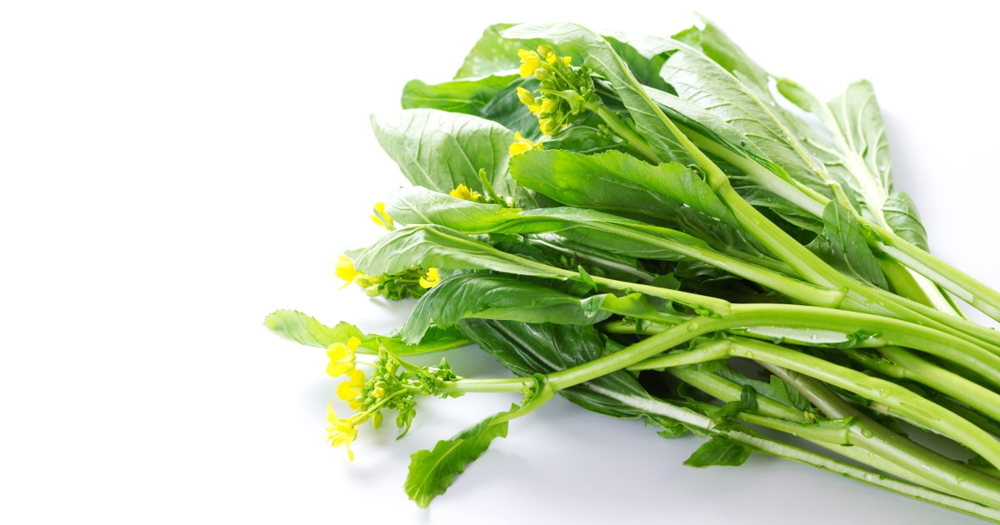
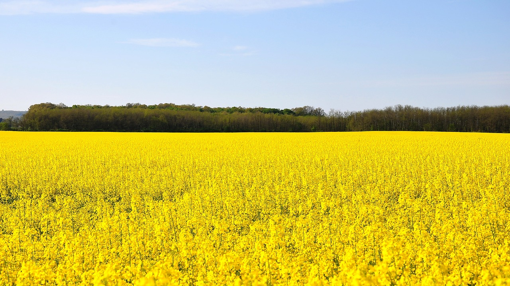
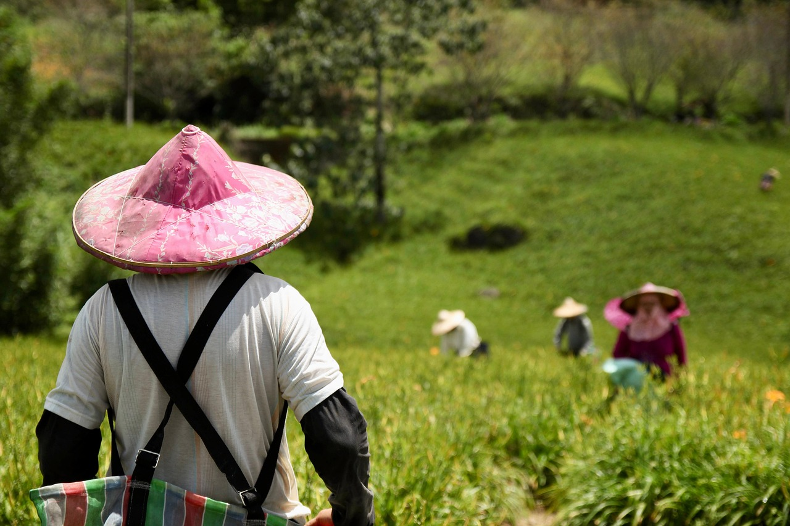
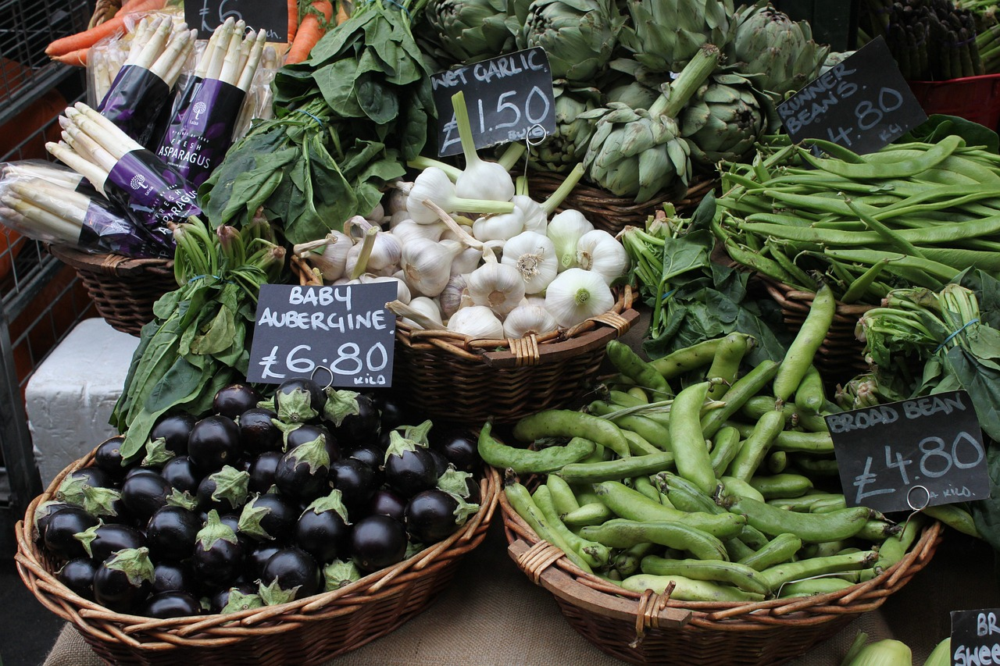
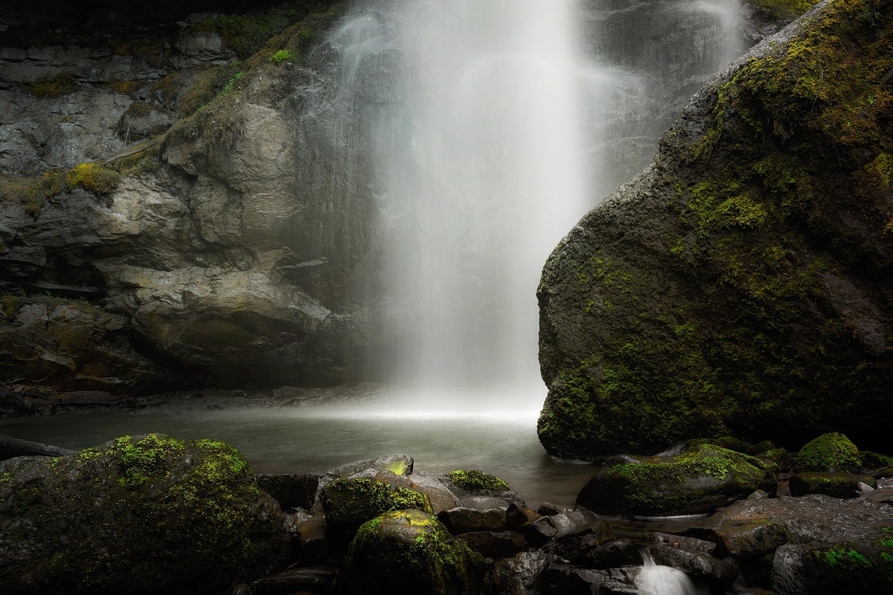
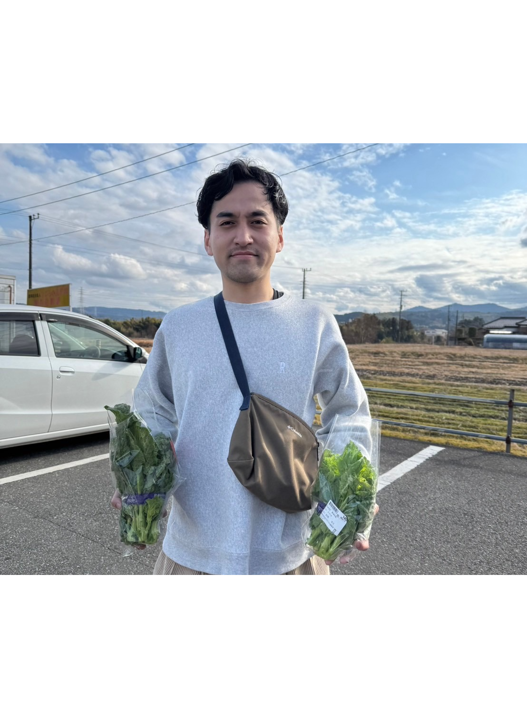
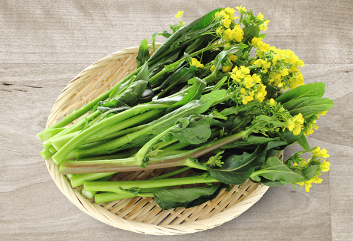
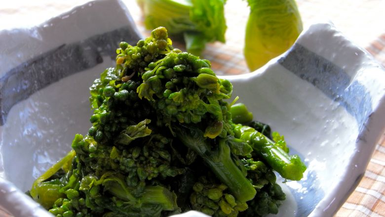
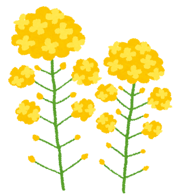

おいしい菜花を食卓へ
産地の恵みを受けて育った菜花で、あなたの食卓を彩りませんか？

千葉県君津市産の美味しい菜花
- クレソンのような辛みと香り
- 苦味、雑味、青臭さなどのクセがない
- 和え物、みそ汁、天ぷら、サラダ
- おかゆ、おひたし、炒め物
- あらゆる料理で食卓を彩りませんか？
産地の風景
-

- 緑豊かな自然に囲まれた畑
- 栄養豊かな土に
水はけもよく雨風に強い畑
-

- 協力し合う地元農家たち
- 老若男女問わず
助け合い和気藹々とした環境
-

- 太陽の恵みを受けた野菜たち
- 畑のすぐ近くには
採れたて野菜の直売所があります
-

- 天然のパワースポットが至る所に
- 濃溝の滝（のうみぞのたき）を
はじめとする美しい景観
生産者の声

千葉県君津市在住
宮原さく
- 千葉県君津市在住 趣味は釣り
- 脱サラして実家の畑を継ぎました
- 研究熱心なところもあり、無農薬で美味しい菜花を
- 育てることに成功しました!!
安心安全の美味しい菜花で
- あなたのお家の食卓を彩りませんか？
商品一覧

- 花々菜花 5kg ¥5000

- 菜花の漬物 5kg ¥5000

- 宮原さんの絵 ¥5000
カートの中の商品
©MiyaharaComp